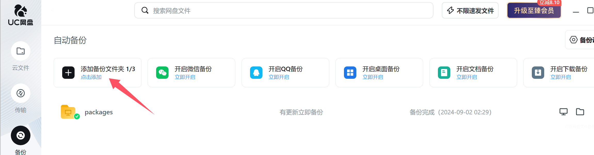
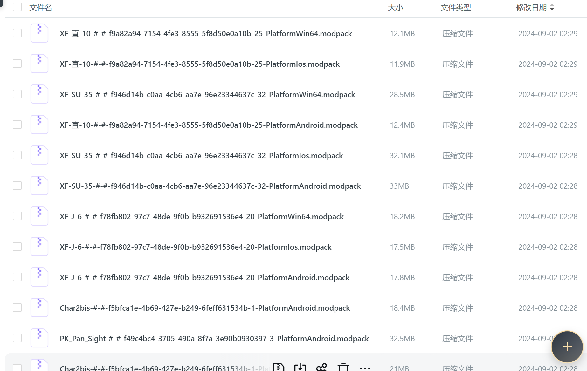

41. Mod Mirror Site Setup Guide 模组镜像站点搭建指南
Source 源
We have compiled all the mods, their update dates, and download links in the following JSON file: We will refresh this JSON file every 12 hours.
https://dl-workshop.windyverse.net/packages/files_list.json
我们将所有的模组，更新日期与其下载链接，放在了如下 json 文件中。
我们会每12小时刷新一次本 json。
https://dl-workshop.windyverse.net/packages/files_list.json
Run script 一键下载脚本
We have thoughtfully prepared a Python script for you that allows one-click downloading of all mods. You can use it directly.
我们贴心的为各位准备了一键下载所有模组的 python 脚本，可供各位直接使用。
Dependence 脚本依赖
Before running the script, please ensure that the following dependencies are installed in your Python environment:
在运行脚本之前，请确保您的 Python 环境中已安装以下依赖项：
requests：用于处理 HTTP 请求。tqdm：用于显示进度条。
You can install the dependencies using the following command:
您可以通过以下命令安装依赖：
pip install requests tqdm
Run Script 运行脚本
import os
import json
import requests
import zipfile
import re
from datetime import datetime
from tqdm import tqdm
# Path to the JSON file that tracks downloaded files
TRACKING_FILE = 'downloaded_files.json'
TEMP_DIR = 'tmp' # Temporary directory for incomplete downloads
SAVE_DIR = 'packages' # Base directory where all files will be saved
PLATFORM_FOLDERS = {
'PlatformAndroid': 'android',
'PlatformWin64': 'win64',
'PlatformIos': 'ios'
}
def load_downloaded_files():
"""Load the list of downloaded files from the tracking JSON file."""
if os.path.exists(TRACKING_FILE):
with open(TRACKING_FILE, 'r') as file:
return json.load(file)
return {}
def save_downloaded_file(downloaded_files, url, local_path):
"""Save the downloaded file information to the tracking JSON file."""
downloaded_files[url] = local_path
with open(TRACKING_FILE, 'w') as file:
json.dump(downloaded_files, file, indent=4)
def sanitize_mod_name(mod_name):
# Remove only special characters that are not allowed in file names
return re.sub(r'[<>:"/\\|?*]', '', mod_name)
def download_file(url, temp_path):
try:
response = requests.get(url, stream=True)
response.raise_for_status()
total_size = int(response.headers.get('content-length', 0))
block_size = 8192 # 8KB
progress_bar = tqdm(total=total_size, unit='iB', unit_scale=True, desc=os.path.basename(temp_path), leave=False)
with open(temp_path, 'wb') as file:
for chunk in response.iter_content(chunk_size=block_size):
progress_bar.update(len(chunk))
file.write(chunk)
progress_bar.close()
if total_size != 0 and progress_bar.n != total_size:
print(f"Warning: Downloaded file size mismatch for {temp_path}")
else:
print(f"Downloaded: {temp_path}")
except requests.exceptions.RequestException as e:
print(f"Failed to download {url}: {e}")
def extract_mod_name_from_zip(zip_path):
if os.path.exists(zip_path): # Check if the file exists before attempting to open it
with zipfile.ZipFile(zip_path, 'r') as zip_ref:
if 'package.json' in zip_ref.namelist():
with zip_ref.open('package.json') as package_file:
package_data = json.load(package_file)
# Check for defaultName in localizedModName
mod_name = package_data.get('modName', 'default')
localized_mod_name = package_data.get('localizedModName', {})
default_name = localized_mod_name.get('defaultName', '').strip()
# Prioritize defaultName if it exists and is not empty
if default_name:
mod_name = default_name
return sanitize_mod_name(mod_name)
return None
def validate_downloaded_files(downloaded_files):
"""Check if the files recorded in the tracking JSON exist locally, and remove any entries that don't."""
missing_files = []
for url, path in list(downloaded_files.items()):
if not os.path.exists(path):
print(f"File missing: {path}. Removing from tracking.")
missing_files.append(url)
for url in missing_files:
del downloaded_files[url]
# Save the updated tracking list
if missing_files:
with open(TRACKING_FILE, 'w') as file:
json.dump(downloaded_files, file, indent=4)
def download_files_from_json(json_data, downloaded_files):
if not os.path.exists(TEMP_DIR):
os.makedirs(TEMP_DIR)
if not os.path.exists(SAVE_DIR):
os.makedirs(SAVE_DIR)
with tqdm(total=len(json_data), desc="Overall Progress", unit="file") as overall_progress:
for file_info in json_data:
file_name = file_info['file_name']
download_link = file_info['download_link']
# Skip if the file is already recorded as downloaded
if download_link in downloaded_files:
if os.path.exists(downloaded_files[download_link]):
print(f"File already downloaded, skipping: {downloaded_files[download_link]}")
overall_progress.update(1)
continue
else:
print(f"File {downloaded_files[download_link]} is missing. Redownloading.")
del downloaded_files[download_link]
# Define the temporary download path
temp_file_path = os.path.join(TEMP_DIR, file_name)
# Download the file to the temporary location
download_file(download_link, temp_file_path)
# Extract modName and rename the file with the prefix
mod_name = extract_mod_name_from_zip(temp_file_path)
if mod_name:
new_file_name = f"{mod_name}-#-#-{file_name}"
else:
new_file_name = file_name
# Determine the platform folder based on the filename
for platform, folder in PLATFORM_FOLDERS.items():
if platform in file_name:
final_dir = os.path.join(SAVE_DIR, folder)
break
else:
final_dir = SAVE_DIR # Default to base save directory if no platform is found
if not os.path.exists(final_dir):
os.makedirs(final_dir)
final_file_path = os.path.join(final_dir, new_file_name)
# Move the file from the temporary location to the final directory
os.rename(temp_file_path, final_file_path)
print(f"Moved to: {final_file_path}")
# Update the tracking dictionary
save_downloaded_file(downloaded_files, download_link, final_file_path)
overall_progress.update(1)
if __name__ == "__main__":
json_url = 'https://dl-workshop.windyverse.net/packages/files_list.json'
try:
response = requests.get(json_url)
response.raise_for_status()
json_data = response.json()
except requests.exceptions.RequestException as e:
print(f"Failed to retrieve JSON file from {json_url}: {e}")
json_data = []
if json_data:
downloaded_files = load_downloaded_files()
validate_downloaded_files(downloaded_files) # Ensure the tracked files exist
download_files_from_json(json_data, downloaded_files)
File synchronization to NetDisk 文件同步至网盘
Using UC NetDisk as an example, automatically back up the packages folder and wait for the synchronization to complete. Once the synchronization is finished, share this folder with the players. This completes the setup of the NetDisk mirror site.
以 UC 网盘为例，自动备份选择 packages 文件夹，等待其同步完成。然后将此文件夹共享给玩家，即完成网盘镜像站的搭建。


Alternative Mirror Site Setup Solutions 其他镜像站搭建方案
You can use tools like Nginx to set up a dedicated mod download site. This helps to offload the traffic from the official downloader and improves download speeds.
可使用 nginx 等工具，搭建专属的模组下载站点，以分流官方下载器的压力，并提高下载速度。